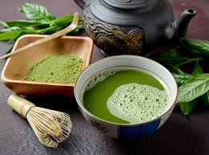

Origins of Matcha
Matcha isn't just the latest beverage fad or coffee replacement. Matcha isn't just a trendy drink that Hollywood drinks by the gallon. Matcha dates back nearly a thousand years to a time when dynasties ruled China and Shogun clans ruled Japan. This is the history of matcha. The origins of matcha can be traced all the way back to the Tang Dynasty in China. The Tang Dynasty spanned the 7th - 10th centuries. During this time, the Tang Dynasty steamed tea leaves to form into bricks, making their tea harvests easier to transport and subsequently trade. These tea bricks were prepared by roasting and pulverizing the leaves then mixing the resulting tea powder with water and salt.
Benefits of Matcha
Matcha is rich in antioxidants, especially catechins like EGCG, which may help prevent cell damage. It provides a calm alertness thanks to its unique combination of caffeine and L-theanine. Matcha can boost metabolism, support heart health, and even improve skin when consumed regularly.
Classic Matcha
1. Sift 1-2 tsp of matcha into a bowl.
2. Add a splash of hot (but not boiling) water.
3. Use a bamboo whisk in a zigzag motion until frothy.
4. Pour over more hot water or steamed milk for a latte.
5. Sweeten to taste and enjoy!